1 / 6
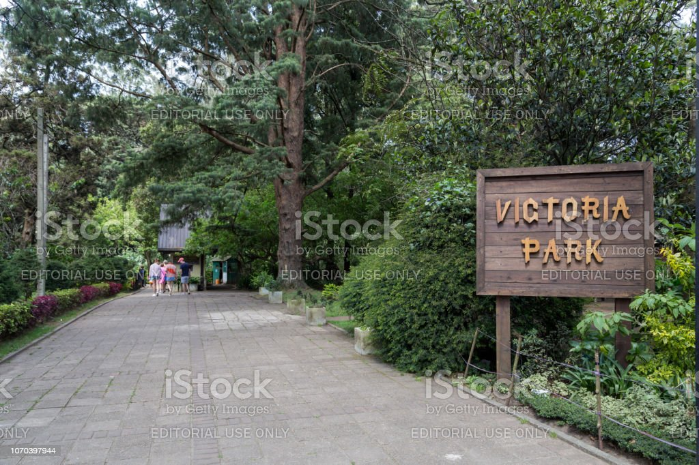
Victoria Park
2 / 6
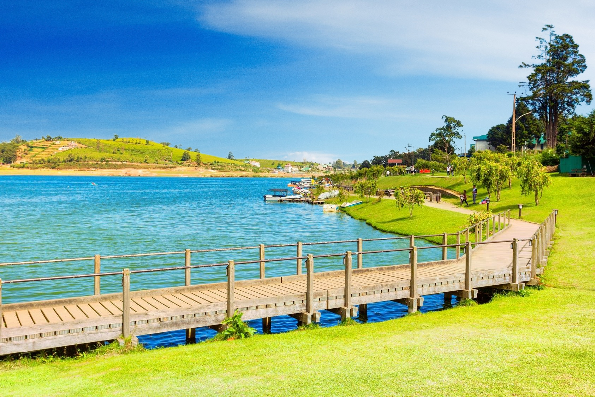
>Victoria Park
3 / 6
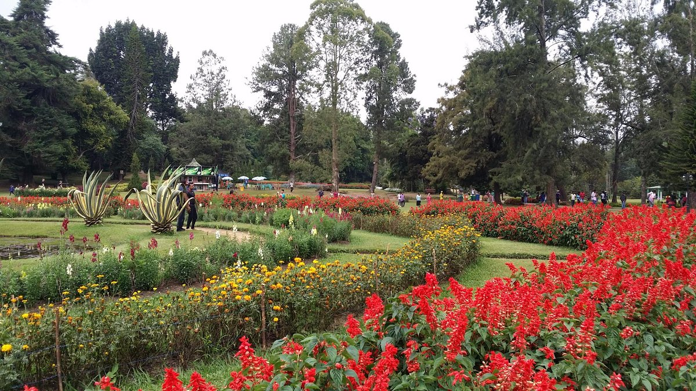
>Victoria Park
4 / 6
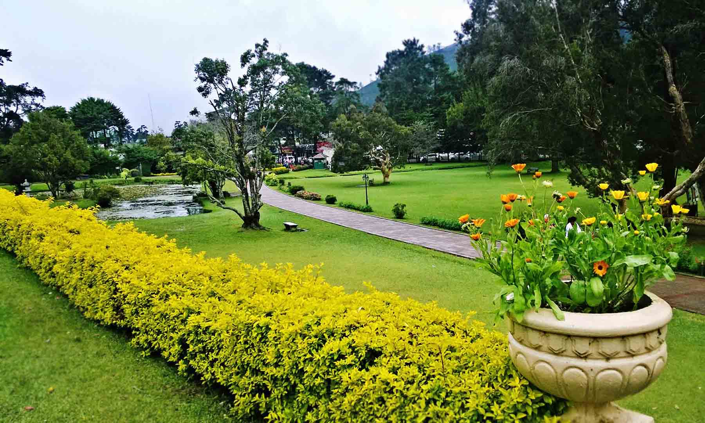
>Victoria Park
5 / 6
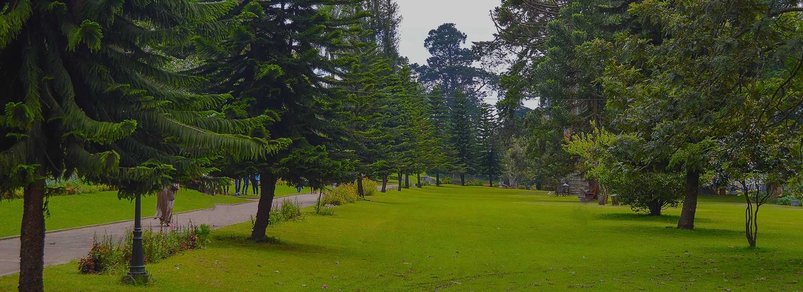
>Victoria Park
6 / 6

>Victoria Park
Nuwara Eliya is a picturesque city located in the central highlands of Sri Lanka.
Known as "Little England" due to its colonial architecture and cool climate, the city offers a charming and unique experience.
There are so ,many places to visit such as Victoria Park, Gregory Lake, Horton Plains National Park, Pedro Tea Estate,
Hakgala Botanical Garden, Galway's Land National Park, Seetha Amman Temple, Lovers Leap Waterfall.
Nuwara Eliya's serene atmosphere, beautiful landscapes, and historical sites make it a perfect destination for those seeking a peaceful and nature-filled getaway.
Whether you explore the city's colonial charm or immerse yourself in its natural beauty, Nuwara Eliya promises a memorable experience.
As you wander through the lush tea plantations and misty hills, Nuwara Eliya's enchanting ambiance will transport you to a bygone era.
The fusion of colonial architecture and Sri Lankan traditions creates a delightful atmosphere,
where you can relish the tranquility of nature and indulge in the warm hospitality of the locals.
Nestled amidst the captivating city of Nuwara Eliya, Victoria Park is a cherished gem that embodies a rich historical, botanical,
and architectural legacy. Originally established in the late 19th century,
the park's roots trace back to the colonial era when it was created under British rule, offering a haven of tranquility to residents and visitors alike.
A delightful fusion of serenity and recreational allure, Victoria Park continues to be meticulously maintained by the Archaeological Department of Sri Lanka,
ensuring that its charm endures for generations to come. Recognized as a cultural heritage site by UNESCO,
the park stands tall as a cherished symbol of the remarkable interplay between European influences and the rich South Asian heritage that flourished from the 16th to the 19th century.
Victoria Park stands as a testament to the unique blending of British landscape design and indigenous Sri Lankan flora,
resulting in a picturesque sanctuary where vibrant flowerbeds, towering trees, and meandering paths come together in harmony.
The park's allure lies not only in its historical significance but also in the thriving biodiversity that graces its grounds.
As you wander through the enchanting pathways of Victoria Park, you'll be greeted by a captivating array of flora that blankets the landscape.
The park boasts a diverse collection of plant species, ranging from vibrant blooms of native orchids to exotic ferns and conifers.
This botanical treasure trove not only captivates visitors with its beauty but also serves as an important site for research and conservation,
contributing to the preservation of Sri Lanka's natural heritage.
Beyond its ornamental charm, Victoria Park also serves as a recreational haven for both locals and tourists.
Families gather for leisurely picnics on the lush lawns, children revel in the joy of the playground,
and friends find solace in leisurely walks along the winding paths. The park's inviting ambiance offers a respite from the hustle and bustle of daily life,
inviting visitors to embrace a moment of serenity in the heart of Nuwara Eliya.
Nestled amidst the picturesque landscape of Nuwara Eliya,
Gregory Lake is a shimmering jewel that adds an enchanting touch to this charming hill station. Built during the British colonial era in the 19th century,
the lake holds a significant historical value as it was originally constructed to serve as a reservoir for the region's water needs.
Today, it has evolved into a popular recreational spot,
attracting both locals and tourists alike with its serene ambiance and stunning vistas.
The allure of Gregory Lake extends beyond its scenic charm, as it also serves as a hub for various water sports and recreational activities.
Adventurous souls can engage in activities like jet skiing and paddle boating, adding a touch of excitement to their visit.
The lake's inviting atmosphere and the tranquil ambiance that envelops it make it a perfect spot for visitors to unwind and connect with nature
while relishing the historical significance of this remarkable water body in Nuwara Eliya.
 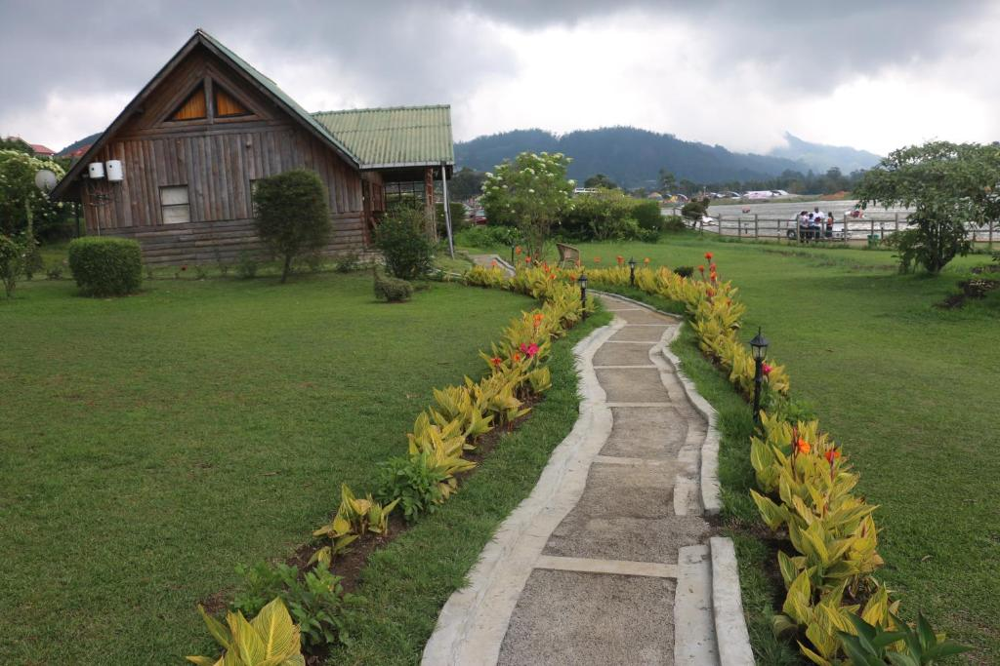
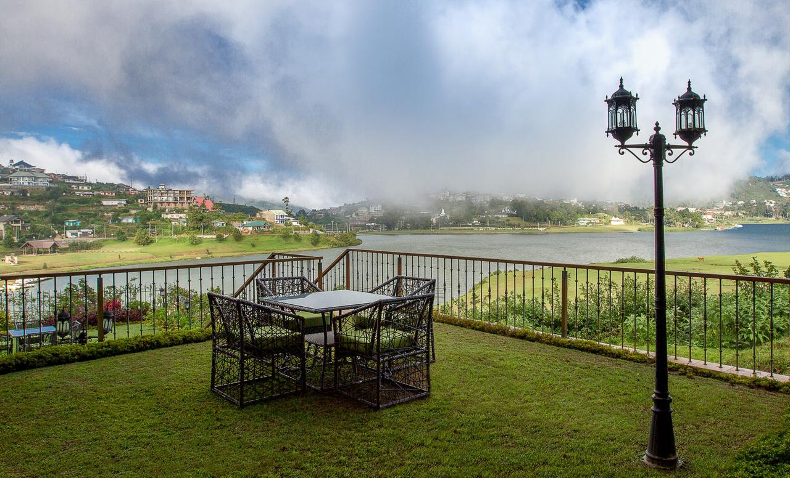
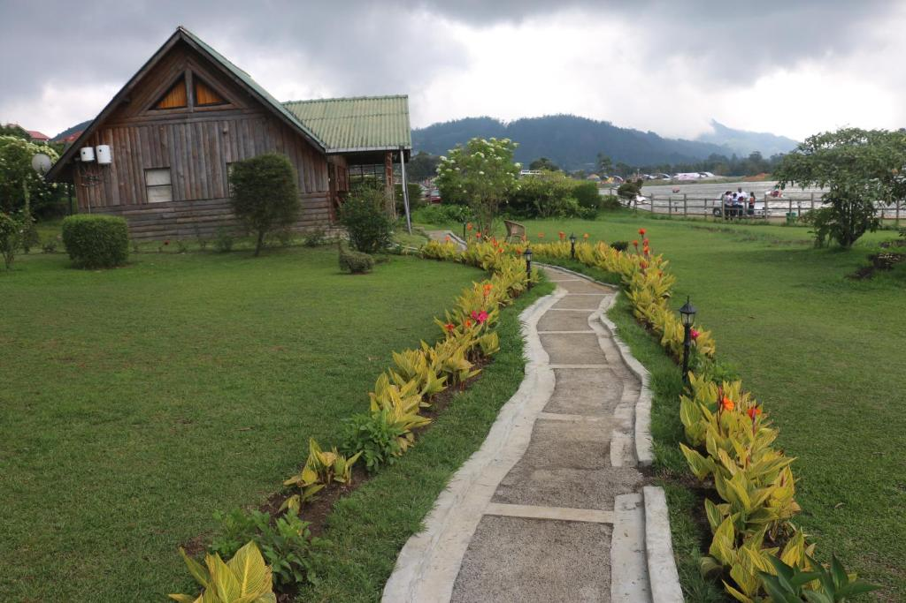
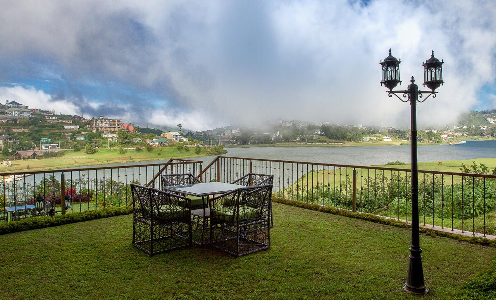
Surrounded by lush greenery and mist-covered hills, Gregory Lake offers a peaceful escape from the bustling city life.
Visitors can indulge in leisurely boat rides, where the gentle ripples of the water reflect the beauty of the surrounding scenery.
The lakeside promenade invites strollers to take in the fresh mountain air while enjoying scenic views and savoring delicious treats from the
nearby cafes and food stalls. At sunset, the lake takes on a magical aura, with the changing hues of the sky mirrored on its glassy surface,
creating a breathtaking spectacle that leaves lasting memories for those who witness it..
Nestled in the central highlands of Sri Lanka, Horton Plains National Park stands as a mesmerizing testament to the
island's natural beauty and biodiversity. This vast expanse of protected land is a sanctuary for wildlife and a treasure trove of diverse ecosystems,
making it a must-visit destination for nature enthusiasts and adventure seekers alike.
The park's most iconic feature is the World's End, a dramatic cliff that offers sweeping panoramic views of the surrounding landscapes.
Standing at the precipice, visitors are treated to an awe-inspiring sight as the mist-covered plains and cascading waterfalls unfold below.
Another renowned attraction is Baker's Falls, a captivating waterfall that cascades gracefully through lush vegetation,
adding a touch of tranquility to the rugged terrain.


THakgala Botanical Garden, situated in the enchanting city of Nuwara Eliya,
is a breathtaking oasis that captivates visitors with its abundant natural beauty and diverse plant life.
Originally established in the 1860s by the British colonial government, the garden serves as a living testament to the island's rich horticultural heritage.
Spread across an extensive area,
Hakgala Botanical Garden offers a splendid array of attractions that cater to both nature enthusiasts and casual visitors alike.
As you step into this verdant sanctuary, you'll be greeted by a captivating blend of indigenous and exotic flora.
The garden's well-kept pathways lead you through an enchanting landscape, where you can marvel at vibrant flowerbeds,
towering trees, and an impressive collection of rare plant species. From colorful orchids to majestic tree ferns,
each corner of Hakgala Botanical Garden showcases nature's diverse palette,
leaving visitors spellbound by the sheer beauty of the botanical treasure trove.
One of the garden's highlights is the iconic Rock Garden, a beautifully landscaped area adorned with natural rock formations and carefully selected plants.
Stroll along the meandering paths,
and you'll be immersed in a serene atmosphere that complements the natural beauty of the surroundings.
Another captivating attraction is the Rose Garden, a haven for lovers of this timeless flower. Here, you'll be treated to a kaleidoscope of rose varieties,
each displaying a kaleidoscope of hues and emitting delightful fragrances. As you wander through the Rose Garden's enchanting pathways,
the symphony of colors and scents creates a surreal experience that leaves an indelible mark on your memory.
Nestled amidst the lush hills of Nuwara Eliya, Pedro Tea Estate is a renowned tea plantation that offers visitors a captivating glimpse into Sri Lanka's rich tea culture. Established in the 19th century, this historic estate is steeped in tradition and continues to produce some of the finest Ceylon tea. As you meander through the neatly manicured tea bushes, guided tours provide fascinating insights into the tea-making process, from plucking the tender leaves to the intricate steps of withering, rolling, fermenting, and drying.
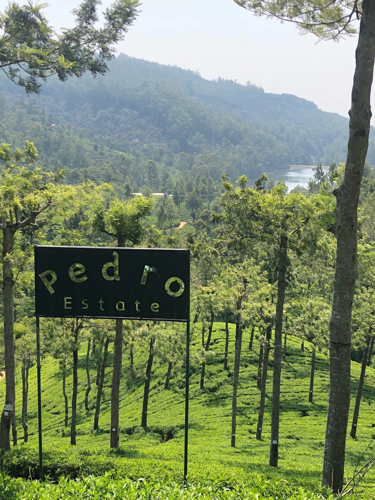 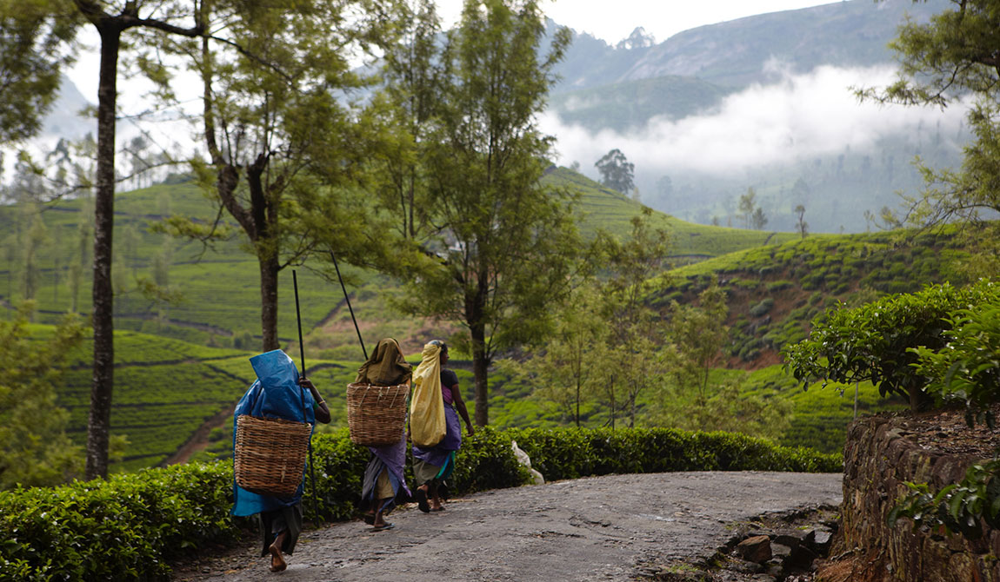Perched at an elevation of over 1,200 meters above sea level, Pedro Tea Estate treats visitors to breathtaking panoramic views of the surrounding hills and valleys. The estate's picturesque landscape, dotted with neatly arranged tea bushes, presents a postcard-worthy sight that entices photographers and nature enthusiasts alike. The cool climate and mist-covered hills add a touch of romance to the tea estate, making it an idyllic destination for a leisurely stroll or a peaceful moment of contemplation. Whether you're a tea connoisseur or simply seeking tranquility amidst nature's embrace, Pedro Tea Estate offers an enchanting escape into the timeless charm of Sri Lanka's tea country.
Nestled in the scenic city of Nuwara Eliya, Galway's Land National Park is a hidden gem that beckons nature
enthusiasts with its serene ambiance and diverse wildlife. Covering an expanse of lush greenery,
this park serves as a haven for birdwatchers and wildlife lovers alike. The park's verdant landscapes and gentle streams offer a peaceful retreat for visitors,
who can wander through well-maintained trails and spot a variety of bird species and endemic wildlife. Galway's Land National Park is an
ideal destination for those seeking a tranquil escape and a chance to immerse themselves in the natural beauty of Sri Lanka's central highlands.
Galway's Land National Park is a nature lover's paradise, boasting a rich array of flora and fauna that thrive in its pristine environment.
As you explore the park's scenic trails, you'll encounter native plant species, exotic flowers,
and towering trees that paint a beautiful picture of Sri Lanka's natural biodiversity. Birdwatching enthusiasts will delight in the chance to spot
olorful winged wonders, while occasional glimpses of sambar deer and other wildlife add to the park's allure.
A visit to Galway's Land National Park offers a soothing respite from the bustling city life,
inviting visitors to connect with nature and appreciate the captivating landscapes that define this picturesque sanctuary.
Lovers Leap Waterfall is a breathtaking natural wonder located near the enchanting city of Nuwara Eliya. T he waterfall derives its name from a romantic local legend, which adds to the allure of this picturesque spot. The legend narrates a tragic love story of a young couple from different social backgrounds who chose to leap from the cliff together, defying societal norms to be together forever. This tale has lent a touch of mystique to the waterfall and has become a symbol of eternal love.
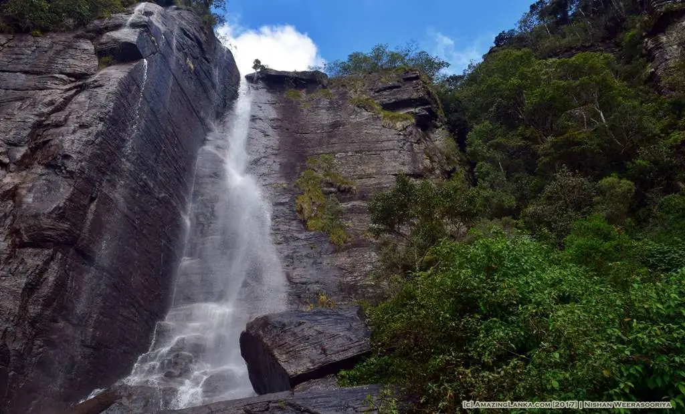 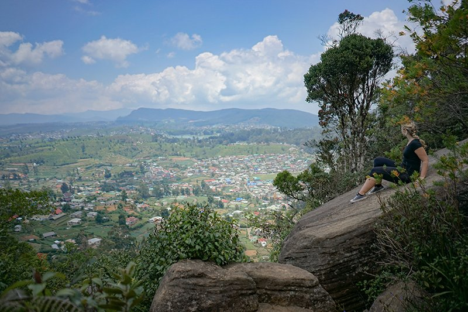 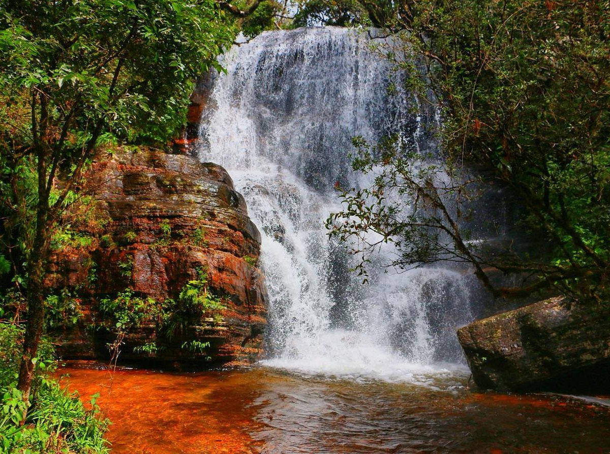Lovers Leap Waterfall is not just a scenic spot, but also a perfect spot for trekkers and hikers to explore the surrounding landscapes. Nature enthusiasts can enjoy a leisurely hike through the serene trails, immersing themselves in the beauty of the surrounding tea plantations and native flora. Whether you're a nature lover, an adventurer, or a hopeless romantic, Lovers Leap Waterfall is sure to leave a lasting impression and offer an unforgettable experience in the heart of Sri Lanka's central highlands.
TSeetha Amman Temple, located in the enchanting city of Nuwara Eliya, holds a significant place in Hindu mythology and is steeped in fascinating history and legends. According to the epic Ramayana, this temple is believed to be the spot where the demon king Ravana, in an attempt to win the heart of Princess Sita, held her captive after abducting her from India. The temple's name itself is derived from Princess Sita, who is also known as Seetha in Hindu mythology. As the tale goes, it was in this very location that Princess Sita prayed to the gods and sought protection during her captivity.

Visiting the Seetha Amman Temple offers not only a chance to explore the legends and traditions of Hindu mythology but also an opportunity to connect with the rich cultural heritage of Sri Lanka. The temple attracts not only devotees but also curious travelers who are fascinated by the stories of love, courage, and devotion associated with the Ramayana. For those seeking a peaceful and spiritually enriching experience in the lap of nature, the Seetha Amman Temple stands as a must-visit destination that promises a memorable and soul-stirring journey.
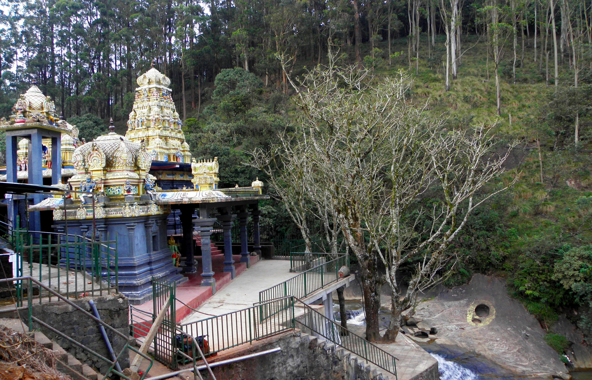 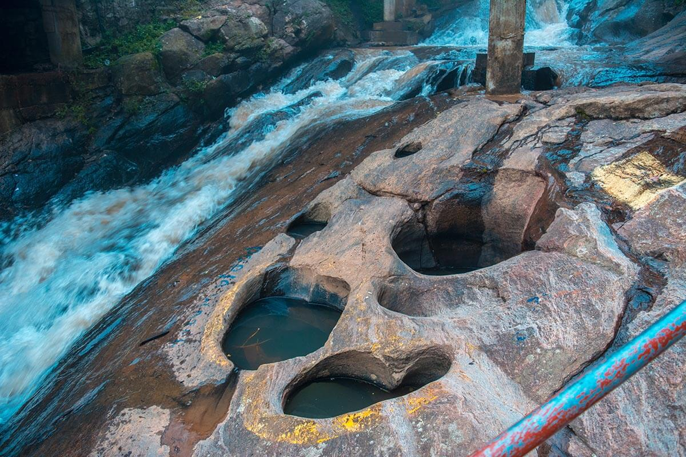